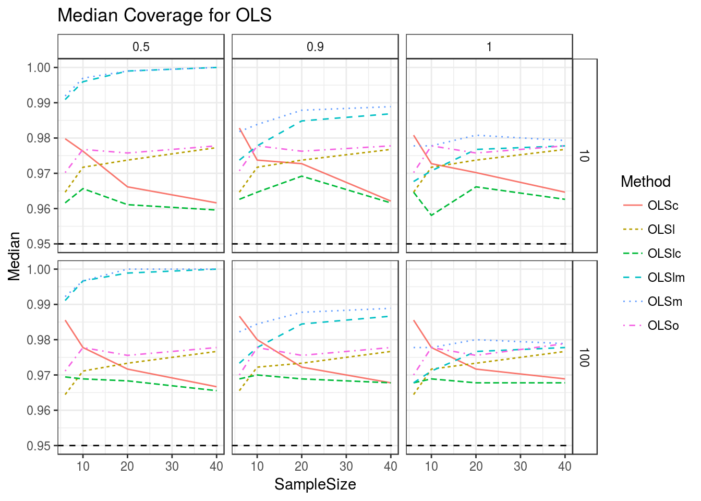
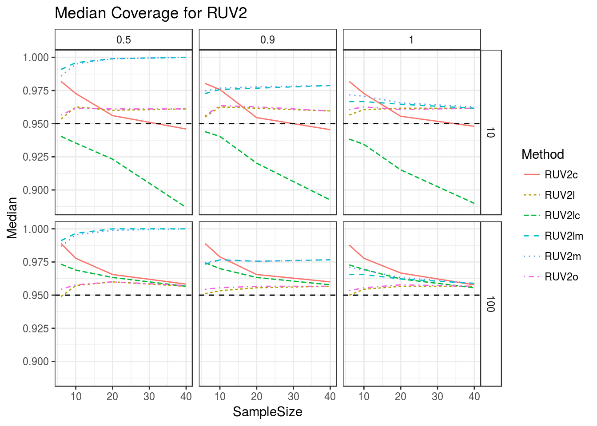
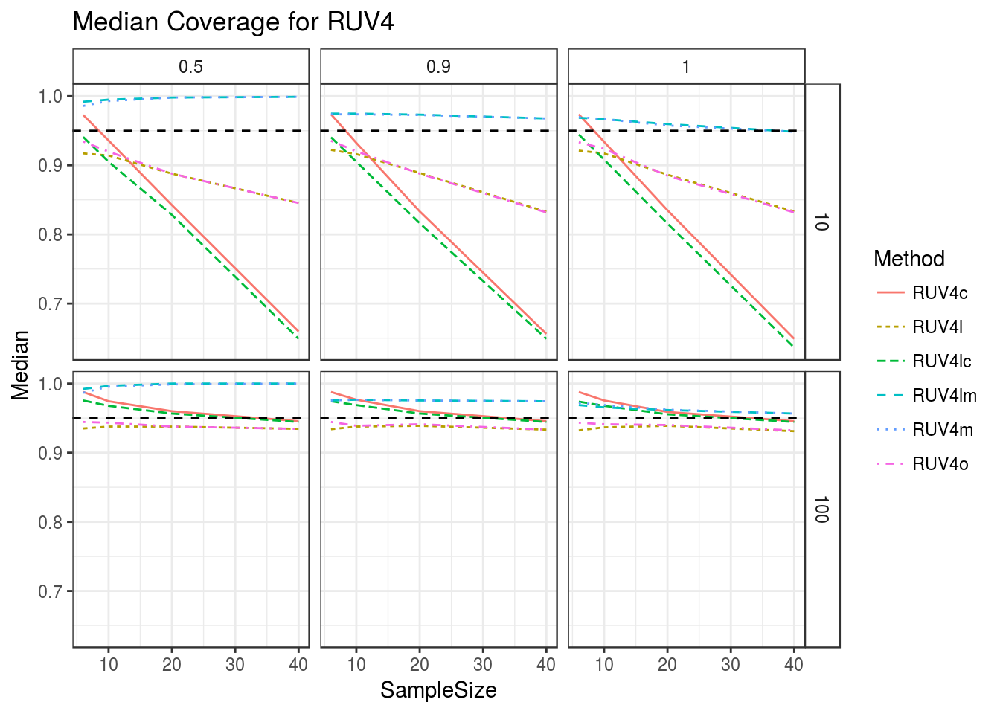
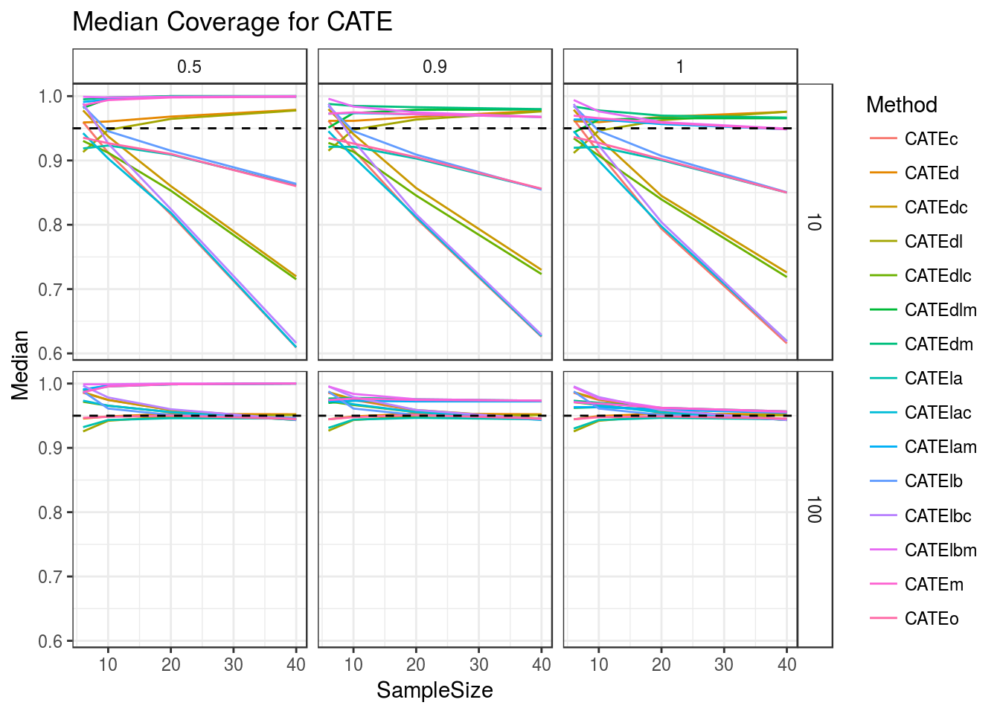
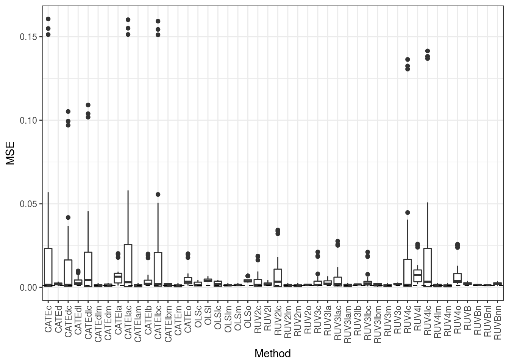
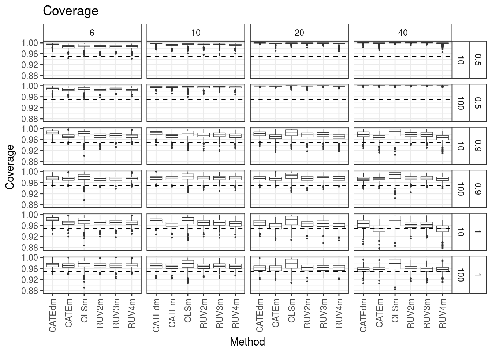
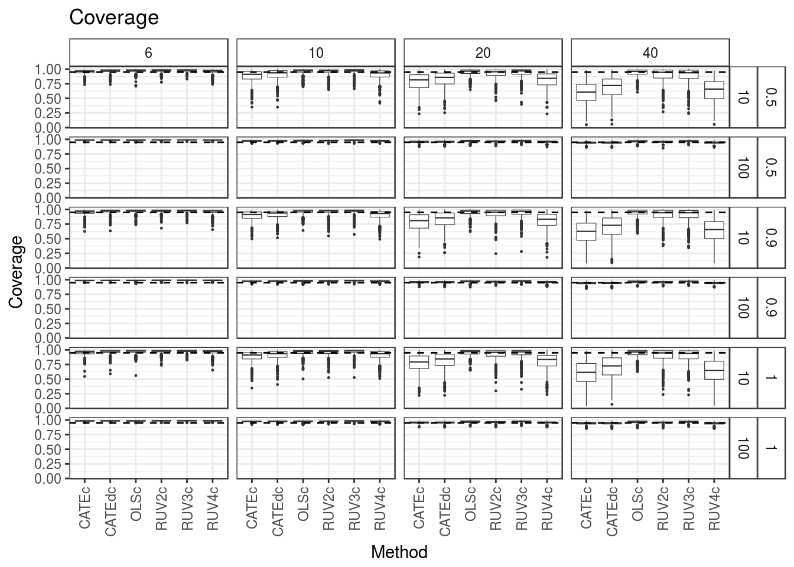
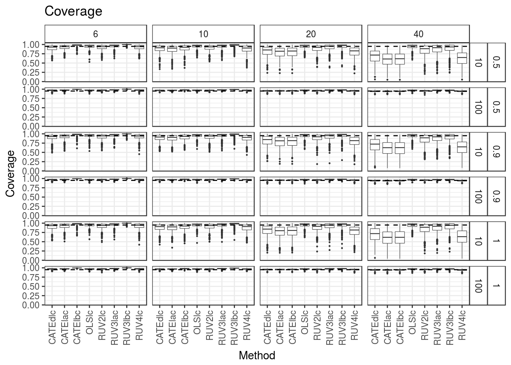
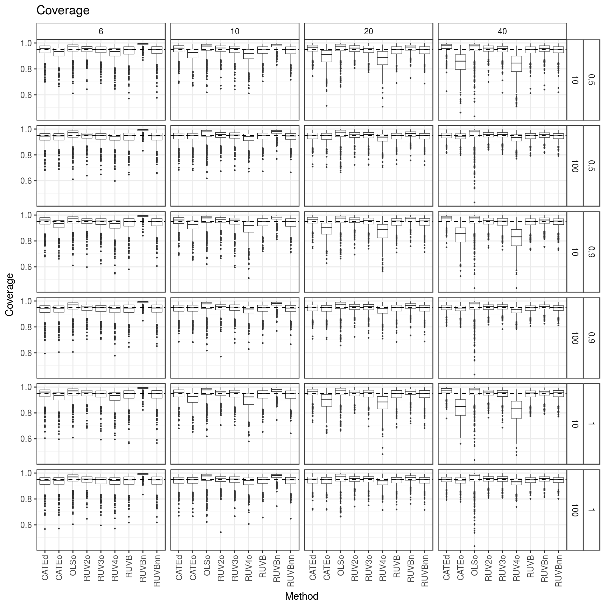

Here, I make some exploratory plots from the output of the RUVB paper simulations. I ultimately make a suggestion on Coverage plots.
Here, I explore six mean methods:
I estimate the variances with the mean methods in different combinations. The key for this is:
First, I make a large boxplot of coverage.
library(tidyverse)## Loading tidyverse: ggplot2
## Loading tidyverse: tibble
## Loading tidyverse: tidyr
## Loading tidyverse: readr
## Loading tidyverse: purrr
## Loading tidyverse: dplyr## Conflicts with tidy packages ----------------------------------------------## filter(): dplyr, stats
## lag(): dplyr, statslibrary(stringr)
covdat <- read_csv(file = "../../reproduce_ruv3/Output/sims_out/cov_mat2.csv")## Parsed with column specification:
## cols(
## .default = col_double(),
## current_seed = col_integer(),
## Nsamp = col_integer(),
## ncontrols = col_integer(),
## poisthin = col_logical()
## )## See spec(...) for full column specifications.left_vals <- toupper(str_replace(str_extract(names(covdat)[-(1:5)], "^.+_"), "_", ""))
right_vals <- str_replace(str_extract(names(covdat)[-(1:5)], "_.+$"), "_", "")
name_vec <- c("Seed", "Pi0", "SampleSize", "NControls", "Poisthin",
paste0(left_vals, right_vals))
name_vec[(length(name_vec) - 2):length(name_vec)] <-
paste0("RUVB", stringr::str_replace(string = names(covdat)[(length(name_vec) - 2):length(name_vec)],
pattern = "(ruvb)(.*+)", replace = "\\2"))
names(covdat) <- name_vec
covdat <- select(covdat, -Seed, -Poisthin)
longdat <- gather(data = covdat, key = "Method", value = "Coverage", -(1:3))
p <- ggplot(data = longdat, mapping = aes(y = Coverage, x = Method)) +
geom_boxplot(outlier.size = 0.2, size = 0.2) +
facet_grid(Pi0 + NControls ~ SampleSize) +
geom_hline(yintercept = 0.95, lty = 2) +
xlab("Method") + ylab("Coverage") +
theme_bw() + theme(axis.text.x = element_text(angle = 90, hjust = 1, vjust = 0.5)) +
theme(strip.background = element_rect(fill="white")) +
ggtitle("Coverage")
print(p)This plot is super busy and hard to wrap my mind around, but we can include a large version of it in the supplementary material. We will calculate medians for each method, then just print out the best performing method in terms of median coverage. RUVB (not RUVBn or RUVBnl) and CATEdl are the best.
meddat <- longdat %>% group_by(Pi0, SampleSize, NControls, Method) %>%
summarise(Median = median(Coverage), Mean = mean(Coverage)) %>%
ungroup()
meddat$Diff <- meddat$Median - 0.95
get_best <- function(Method, Diff) {
Method[which.min(abs(Diff))]
}
bestdat <- meddat %>% group_by(Pi0, SampleSize, NControls) %>%
summarise(Best = get_best(Method, Diff))
table(bestdat$Best)##
## CATEd CATEdl CATEdm CATEo RUV2l RUV2m RUV3la RUV3lac RUV4lm
## 2 6 1 1 2 1 1 1 1
## RUVB
## 8Get the median coverage rankings within each scenario.
get_ranks <- function(Diff) {
rank(abs(Diff))
}
meddat <- meddat %>% group_by(Pi0, SampleSize, NControls) %>%
mutate(Rank = get_ranks(Diff)) %>%
ungroup()Boxplot of ranks. Note that RUVB is always one of the best ones.
ggplot(data = meddat, mapping = aes(x = Method, y = Rank)) +
geom_boxplot() +
theme_bw() + theme(axis.text.x = element_text(angle = 90, hjust = 1, vjust = 0.5)) +
theme(strip.background = element_rect(fill="white"))So RUVB has the best “typical coverage”. That is, the median coverage.
Now I will go and just look at the CATE methods, the RUV4 methods, the RUV3 methods, the RUV2 methods, the RUVB methods, and the OLS methods.
First, OLS:
tempdat <- meddat %>% filter(str_detect(Method, "OLS"))
ggplot(data = tempdat, mapping = aes(x = SampleSize, y = Median, color = Method, lty = Method)) +
geom_line() +
facet_grid(NControls ~ Pi0) +
geom_hline(yintercept = 0.95, lty = 2) +
theme_bw() + theme(strip.background = element_rect(fill = "white")) +
ggtitle("Median Coverage for OLS")
RUV2:
tempdat <- meddat %>% filter(str_detect(Method, "RUV2"))
ggplot(data = tempdat, mapping = aes(x = SampleSize, y = Median, color = Method, lty = Method)) +
geom_line() +
facet_grid(NControls ~ Pi0) +
geom_hline(yintercept = 0.95, lty = 2) +
theme_bw() + theme(strip.background = element_rect(fill = "white")) +
ggtitle("Median Coverage for RUV2")
RUV3:
tempdat <- meddat %>% filter(str_detect(Method, "RUV3"))
ggplot(data = tempdat, mapping = aes(x = SampleSize, y = Median, color = Method, lty = Method)) +
geom_line() +
facet_grid(NControls ~ Pi0) +
geom_hline(yintercept = 0.95, lty = 2) +
theme_bw() + theme(strip.background = element_rect(fill = "white")) +
ggtitle("Median Coverage for RUV3")RUV4: RUV4 has similar behavior to the CATE methods.
tempdat <- meddat %>% filter(str_detect(Method, "RUV4"))
ggplot(data = tempdat, mapping = aes(x = SampleSize, y = Median, color = Method, lty = Method)) +
geom_line() +
facet_grid(NControls ~ Pi0) +
geom_hline(yintercept = 0.95, lty = 2) +
theme_bw() + theme(strip.background = element_rect(fill = "white")) +
ggtitle("Median Coverage for RUV4")
CATE: CATEd works really well when m = 100. None of the methods work well when m = 10 and pi0 = 0.5.
tempdat <- meddat %>% filter(str_detect(Method, "CATE"))
ggplot(data = tempdat, mapping = aes(x = SampleSize, y = Median, color = Method)) +
geom_line() +
facet_grid(NControls ~ Pi0) +
geom_hline(yintercept = 0.95, lty = 2) +
theme_bw() + theme(strip.background = element_rect(fill = "white")) +
ggtitle("Median Coverage for CATE")
RUVB: RUVB works the best. RUVn and RUVBnl are a little conservative. But I use the t distribution instead of the normal, so this might go away if I use normal instead.
tempdat <- meddat %>% filter(str_detect(Method, "RUVB"))
ggplot(data = tempdat, mapping = aes(x = SampleSize, y = Median, color = Method, lty = Method)) +
geom_line() +
facet_grid(NControls ~ Pi0) +
geom_hline(yintercept = 0.95, lty = 2) +
theme_bw() + theme(strip.background = element_rect(fill = "white")) +
ggtitle("Median Coverage for RUVB")How bad is bad coverage? Since there is asymetry in the coverage, I don’t think MSE is the best measure, but we can look at it. I could re-do the simulations and also include the lengths of the confidence intervals?
But in terms of the minimum mean MSE (averaging across all scenarios), RUV2m does the best. From the boxplots, RUV2m is a little conservative at Pi0 = 0.5 and a little anti-conservative at Pi0 = 1. RUVBnl also does pretty well.
get_mse095 <- function(Coverage) {
mean((Coverage - 0.95) ^ 2)
}
msedat <- longdat %>% group_by(Pi0, SampleSize, NControls, Method) %>%
summarize(MSE = get_mse095(Coverage)) %>%
ungroup()
temp <- msedat %>% group_by(Method) %>% summarize(Mean = mean(MSE))
temp$Method[order(temp$Mean)]## [1] "RUV2m" "RUV3m" "CATEdm" "RUV4m" "CATEm" "RUVBnl" "OLSm"
## [8] "RUV2lm" "RUV3lam" "RUV4lm" "RUV3lbm" "RUVBn" "CATElam" "CATElbm"
## [15] "RUV2o" "CATEdlc" "OLSlc" "CATElac" "RUV4lc" "CATEdlm" "RUV2lc"
## [22] "OLSlm" "RUV3lb" "RUV4c" "CATEc" "OLSc" "RUV2c" "CATEdc"
## [29] "CATElbc" "RUV3o" "CATEd" "RUV2l" "RUVB" "RUV3la" "CATEdl"
## [36] "OLSo" "RUV3c" "OLSl" "RUV3lbc" "CATElb" "CATEo" "RUV3lac"
## [43] "CATEla" "RUV4o" "RUV4l"min_mse <- min(temp$Mean)
ggplot(data = msedat, mapping = aes(x = Method, y = MSE)) +
geom_boxplot() +
theme_bw() + theme(axis.text.x = element_text(angle = 90, hjust = 1, vjust = 0.5)) +
theme(strip.background = element_rect(fill="white")) +
geom_hline(yintercept = min_mse, lty = 2)
I am going to extract “m”, “c”, “lm”, and “lc” methods and plot them together.
The “m” methods all have very similar behavior (except for OLSm). They are too conservative at Pi0 = 0.5 and they are too anti-conservative at Pi0 = 1.
mdata <- longdat %>% filter(stringr::str_detect(Method, "(?<!l|la|lb)m$"))
unique(mdata$Method)## [1] "OLSm" "RUV2m" "RUV3m" "RUV4m" "CATEm" "CATEdm"pl <- ggplot(data = mdata, mapping = aes(y = Coverage, x = Method)) +
geom_boxplot(outlier.size = 0.2, size = 0.2) +
facet_grid(Pi0 + NControls ~ SampleSize) +
geom_hline(yintercept = 0.95, lty = 2) +
xlab("Method") + ylab("Coverage") +
theme_bw() + theme(axis.text.x = element_text(angle = 90, hjust = 1, vjust = 0.5)) +
theme(strip.background = element_rect(fill="white")) +
ggtitle("Coverage")
print(pl)
The limma-m methods. CATElbm and RUV3lbm (the limma BEFORE GLS methods) behave similarly while the rest of the limma methods behave similarly. Again, we see conservative behavior at Pi0 = 0.5 and anticonservative behavior at Pi0 = 1.
lmdata <- longdat %>% filter(stringr::str_detect(Method, "(lm|lam|lbm)$"))
unique(lmdata$Method)## [1] "OLSlm" "RUV2lm" "RUV3lbm" "RUV3lam" "RUV4lm" "CATElbm" "CATElam"
## [8] "CATEdlm"pl <- ggplot(data = lmdata, mapping = aes(y = Coverage, x = Method)) +
geom_boxplot(outlier.size = 0.2, size = 0.2) +
facet_grid(Pi0 + NControls ~ SampleSize) +
geom_hline(yintercept = 0.95, lty = 2) +
xlab("Method") + ylab("Coverage") +
theme_bw() + theme(axis.text.x = element_text(angle = 90, hjust = 1, vjust = 0.5)) +
theme(strip.background = element_rect(fill="white")) +
ggtitle("Coverage")
print(pl)The “c” methods. I might have some problem with RUV3c — it works very very poorly for large n and small number of control genes (I’ve deleted many of those points from the below boxplot). Otherwise, they are all too conservative at small n or small m and work great for large n and large m. This is different behavior from what I originally saw, so I am wondering if I made a mistake here.
cdata <- longdat %>% filter(stringr::str_detect(Method, "(?<!l|la|lb)c$"))
unique(cdata$Method)## [1] "OLSc" "RUV2c" "RUV3c" "RUV4c" "CATEc" "CATEdc"pl <- ggplot(data = cdata, mapping = aes(y = Coverage, x = Method)) +
geom_boxplot(outlier.size = 0.2, size = 0.2) +
facet_grid(Pi0 + NControls ~ SampleSize) +
geom_hline(yintercept = 0.95, lty = 2) +
xlab("Method") + ylab("Coverage") +
theme_bw() + theme(axis.text.x = element_text(angle = 90, hjust = 1, vjust = 0.5)) +
theme(strip.background = element_rect(fill="white")) +
ggtitle("Coverage") +
ylim(0.85, 1)
print(pl)## Warning: Removed 636 rows containing non-finite values (stat_boxplot).
The “lc” methods. I am again seeing similar behavior. Very conservative everywhere except for large n and m. Again, the RUV3c methods don’t work too well (points removed).
lcdata <- longdat %>% filter(stringr::str_detect(Method, "(lc|lac|lbc)$"))
unique(lcdata$Method)## [1] "OLSlc" "RUV2lc" "RUV3lbc" "RUV3lac" "RUV4lc" "CATElbc" "CATElac"
## [8] "CATEdlc"pl <- ggplot(data = lcdata, mapping = aes(y = Coverage, x = Method)) +
geom_boxplot(outlier.size = 0.2, size = 0.2) +
facet_grid(Pi0 + NControls ~ SampleSize) +
geom_hline(yintercept = 0.95, lty = 2) +
xlab("Method") + ylab("Coverage") +
theme_bw() + theme(axis.text.x = element_text(angle = 90, hjust = 1, vjust = 0.5)) +
theme(strip.background = element_rect(fill="white")) +
ggtitle("Coverage") +
ylim(0.8, 1)
print(pl)## Warning: Removed 1017 rows containing non-finite values (stat_boxplot).
The non “c” and “m” methods.
ncmdata <- longdat %>% filter(!stringr::str_detect(Method, "(c|m|l|la|lb)$"))
unique(ncmdata$Method)## [1] "OLSo" "RUV2o" "RUV3o" "RUV4o" "CATEo" "CATEd" "RUVBn" "RUVB"pl <- ggplot(data = ncmdata, mapping = aes(y = Coverage, x = Method)) +
geom_boxplot(outlier.size = 0.2, size = 0.2) +
facet_grid(Pi0 + NControls ~ SampleSize) +
geom_hline(yintercept = 0.95, lty = 2) +
xlab("Method") + ylab("Coverage") +
theme_bw() + theme(axis.text.x = element_text(angle = 90, hjust = 1, vjust = 0.5)) +
theme(strip.background = element_rect(fill="white")) +
ggtitle("Coverage")
print(pl)
sessionInfo()## R version 3.3.2 (2016-10-31)
## Platform: x86_64-pc-linux-gnu (64-bit)
## Running under: Ubuntu 16.04.2 LTS
##
## locale:
## [1] LC_CTYPE=en_US.UTF-8 LC_NUMERIC=C
## [3] LC_TIME=en_US.UTF-8 LC_COLLATE=en_US.UTF-8
## [5] LC_MONETARY=en_US.UTF-8 LC_MESSAGES=en_US.UTF-8
## [7] LC_PAPER=en_US.UTF-8 LC_NAME=C
## [9] LC_ADDRESS=C LC_TELEPHONE=C
## [11] LC_MEASUREMENT=en_US.UTF-8 LC_IDENTIFICATION=C
##
## attached base packages:
## [1] stats graphics grDevices utils datasets methods base
##
## other attached packages:
## [1] stringr_1.2.0 dplyr_0.5.0 purrr_0.2.2 readr_1.0.0
## [5] tidyr_0.6.1 tibble_1.2 ggplot2_2.2.1 tidyverse_1.1.1
##
## loaded via a namespace (and not attached):
## [1] Rcpp_0.12.10 plyr_1.8.4 forcats_0.2.0 tools_3.3.2
## [5] digest_0.6.12 jsonlite_1.3 lubridate_1.6.0 evaluate_0.10
## [9] nlme_3.1-131 gtable_0.2.0 lattice_0.20-34 psych_1.6.12
## [13] DBI_0.6 yaml_2.1.14 parallel_3.3.2 haven_1.0.0
## [17] xml2_1.1.1 httr_1.2.1 knitr_1.15.1 hms_0.3
## [21] rprojroot_1.2 grid_3.3.2 R6_2.2.0 readxl_0.1.1
## [25] foreign_0.8-67 rmarkdown_1.3 modelr_0.1.0 reshape2_1.4.2
## [29] magrittr_1.5 backports_1.0.5 scales_0.4.1 htmltools_0.3.5
## [33] rvest_0.3.2 assertthat_0.2.0 mnormt_1.5-5 colorspace_1.3-2
## [37] labeling_0.3 stringi_1.1.2 lazyeval_0.2.0 munsell_0.4.3
## [41] broom_0.4.2This site was created with R Markdown